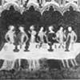

Collective Biographies of WomenAn Annotated Bibliography
Alison Booth
852.
Welch, Alice Kemp [or Kemp-Welch]. Of Six Mediaeval Women: To Which Is Added a Note on Medieval Gardens. London: Macmillan, 1903; 1913. Williamstown, MA: Corner House, 1972; 1979.
Search OCLC WorldCat for this title.
Search Google Books for this title.
Welch, Alice Kemp [or Kemp-Welch]. Of Six Mediaeval Women: To Which Is Added a Note on Medieval Gardens. London: Macmillan, 1903; 1913. Williamstown, MA: Corner House, 1972; 1979.
TOC: A Tenth-Century Dramatist, Roswitha the Nun; A Twelfth-Century Romance-Writer, Marie de France; A Thirteenth-Century Mystic and Beguine, Mechthild of Magdeburg; A Fourteenth-Century Art-Patron and Philanthropist, Mahaut, Countess of Artois; A Fifteenth-Century Feministe, Christine de Pisan; Agnes Sorel; A Note on Mediaeval Gardens.
Partly reprinted from the nineteenth century and after.
-
Lady Playing Harp
-
 Marriage of Charles LeBel and Marie of Luxemburg
Marriage of Charles LeBel and Marie of Luxemburg -
 Thirteenth-Century Treatise on Surgery, in French
Thirteenth-Century Treatise on Surgery, in French -
Banquet, with Minstrels playing and room hung with embroidery
-
Harl. MS. 4425, Brit. Mus
-
Christine de Pisan
-
 Setting out for Poissy
Setting out for Poissy -
 Book of Hours of Etienne
Book of Hours of Etienne -
 Flemish Master
Flemish Master
Search OCLC WorldCat for this title.
Search Google Books for this title.